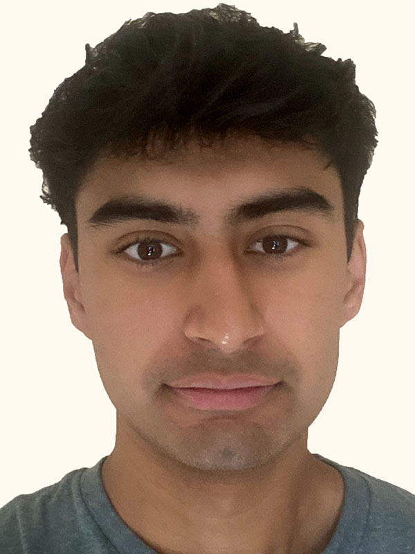
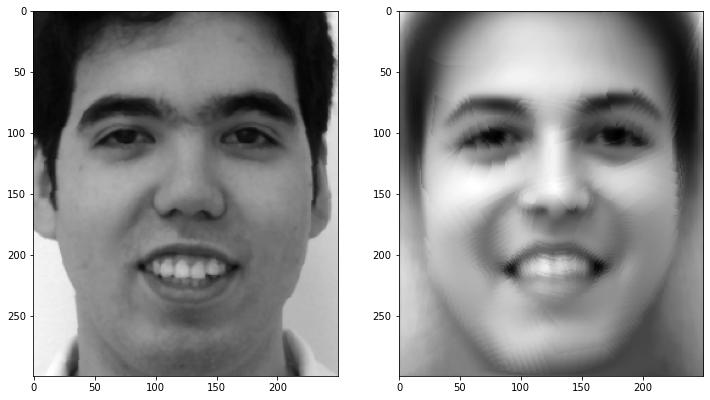
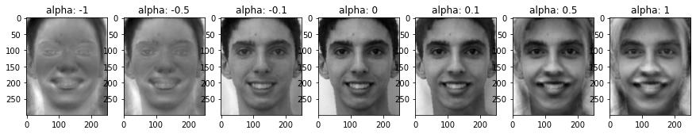

In this project, I learned how to simplify images geometrically, split them into triangles, and use matrix transformations to create complicated yet smooth morphs between different images.
Before, we manipulated images using their pixel values or frequencies, but here, I got to see how the locations of the pixels can be manipulated with linear algebra, which unlocks the doors to many interesting
applications in image processing and computer vision. It was also cool to see how averaging many pictures together using their average shape across a dataset can create a smooth output and also how principal component analysis could naturally
identify and bring out features that I thought were only distinguishable and relevant to the human eye.
1: Defining Correspondences

Rohan Gulati
Jesse Pinkman
Rohan Gulati + Correspondences
Jesse Pinkman + Correspondences
Rohan Gulati + Delaunay
Jesse Pinkman + Delaunay
To create correspondences between myself and Jesse Pinkman, I first scaled both pictures such that they had the same resolution and aspect ratio, using Photoshop.
Afterwards, I used the correspondence tool to iteratively select key corresponding points on our faces as shown above. With these points, I used Scipy's Delaunay method
to create a triangulation of these keypoints for each image.
2: Computing the "Mid-Way Face"
Rohan Gulati
Jesse Pinkman
Rohan Pinkman
With the key defining points of each shape, I could compute the midway face shape by taking the average coordinate of every pair of correspondences between me and Jesse Pinkman.
I would calculate the Delaunay triangulation of this midway face shape, creating corresponding triangles across my face, Jesse Pinkman's face, and the midway face.
I then implemented a warp method that used matrix transformations to warp each triangle (and simultaneously all of the pixels inside) within my face's and Jesse Pinkman's triangulation
into the respective triangle within the midway face triangulation. To do this, I created two matrices of the homogeneous coordinates of the three corners of the triangle for both the initial (A)
and resulting triangle (B). One column would look like [x,y,1] for the x and y coordinates for that corner of that particular triangle. I wanted to compute the transformation matrix T such that
T*A = B, so I could map any pixel or point within A to the respective point in B. After computing the inverse of A, T could be calculated as B*inv(A). Since I had a transformation
to the midway shape for each triangle for both me and Jesse Pinkman, I could also use inv(T) to map any pixel in the midway shape to its source pixel in each source image.
Lastly, I would cross-dissolve the images by averaging the values of all of these corresponding source pixels and setting it as the pixel value for the midway face.
3: The Morph Sequence
Rohan Pinkman
In the previous part, I computed the midway face by weighting my face's pointset and pixel values by 0.5 and Jesse's pointset and pixel values by 0.5 and summing them together. Here, I create a gradual transition
between our faces by by interpolating these components instead with 45 discrete frames with different ratios of each image. Instead of using 0.5 and 0.5 for each image, I would use i/45 and (45-i)/45 for i from 0 to 45
for my pointset and pixel values and Jesse's pointset and pixel values respectively, allowing for a smooth cross-dissolve and warping. Chaining these 46 frames together with 33ms in between, I created the GIF!
4: The "Mean Face" of a Population
The FEI face database is a Brazilian face database that contains photographs of 200 individuals taken at the Artificial Intelligence Laboratory of FEI in São Bernardo do Campo, São Paulo, Brazil. While this dataset includes
both neutral and smiling expressions of each individual, I chose to use the smiling subset for the below processing.
Mean Smiling Face of FEI Dataset
To compute this mean face, like before, I computed the average shape of the correspondences across all 200 photographs. Next, for each pixel in the mean face,
I averaged the corresponding pixel values across all of the 200 source images.
Ex #1 to Mean Face Shape
Ex #2 to Mean Face Shape
Ex #3 to Mean Face Shape
Ex #4 to Mean Face Shape
Ex #5 to Mean Face Shape
Me warped into FEI Mean Face
To warp each image to the mean face, I found the Delaunay triangulation of the mean face, and used the aforementioned methods to warp each triangle in the individual's face
to the corresponding triangle in the mean shape.
FEI Mean Face warped into my face shape
Mean Face Shape to Ex #1
Mean Face Shape to Ex #2
Mean Face Shape to Ex #3
Mean Face Shape to Ex #4

Mean Face Shape to Ex #5
To warp the mean faces into the individual's shape, similar to before, I would calculate the Delaunay triangulation of the individual and apply the warping transformation
to warp each pixel in the triangles of the mean face to the corresponding triangles in the individual's face.
5: Caricatures: Extrapolating from the mean
Extrapolated Caricatures from FEI Mean Smiling Face
To compute my caricature using the mean FEI smiling face, I extrapolated my triangulation using the mean face. To do this, I found difference between the average face correspondences and mine and amplified / diminished this value with a parameter
alpha which ranged from -1 to 2, instead of the standard [0,1], before adding it to my own correspondences. Warping my picture to the exaggerated values of alpha produced some caricatures of me as
shown above.
Bells & Whistles 1: Principal Component Analysis
Principal Component Analysis of the FEI Dataset
Each image was 300x250 in size, so unravelling this into a 75000 element long array represented the same information. After doing this for all 200 images,
we are left with a 200 x 75000 matrix. Using Sklearn's PCA method, I extracted the top 16 principal components and reshaped each of them back into 300 x 250 images
as shown above. Each principal component in this basis can represent different features in the image.
Below, I roughly estimated what some of the principal components represented and amplified/diminished their presence in both the average & individual images to see
how they changed and if any features emerged or disappeared.
Caricatures of Average Face with Principal Component 6: Facial Hair?

Caricatures of an individual photograph with Principal Component 6: Facial Hair?
Caricatures of Average Face with Principal Component 10: Light/Serious Smile?
Caricatures of individual photograph with Principal Component 10: Light/Serious Smile?
Bells & Whistles 2: Music Video
My friends and I also morphed our faces together and made a short music video. We just made sure to use the same correspondences and then applied the method from part 3.